Helpdesk User Manual
How to use the Helpdesk system, organised by role. Requesters raise and follow tickets; approvers sign off on requests that need it; administrators triage tickets and manage the master data. Use the contents on the left to jump to a topic.
For Requesters
Everyone who raises and follows up on support tickets.
Signing in & finding your way around
Sign in with email/password or your Microsoft account, and learn the layout.
Signing in
Open the app and you will land on the sign-in page. Use whichever method your organisation set up for you.
- Enter your work email and password, then choose Sign In.
- Or choose Sign in with Microsoft and complete the Microsoft prompt.
- If you forget your password, use Forgot password on the sign-in page.
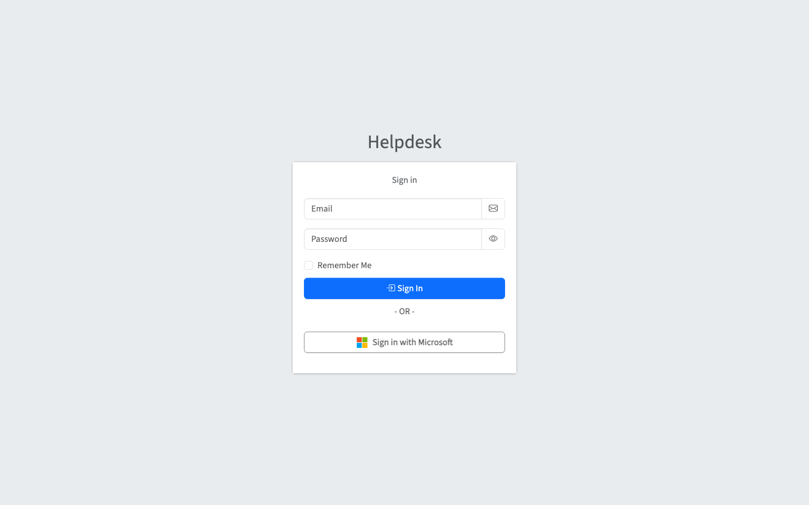
The screen layout
After signing in you see a left sidebar for navigation, a top bar with search and the notification bell, and the current page in the middle.
- Ticket — the tickets you have raised.
- Assigned Ticket — tickets assigned to you (individually or through a group).
- Lesson Learned — a searchable knowledge base of past solutions.
- User Manual — this guide.
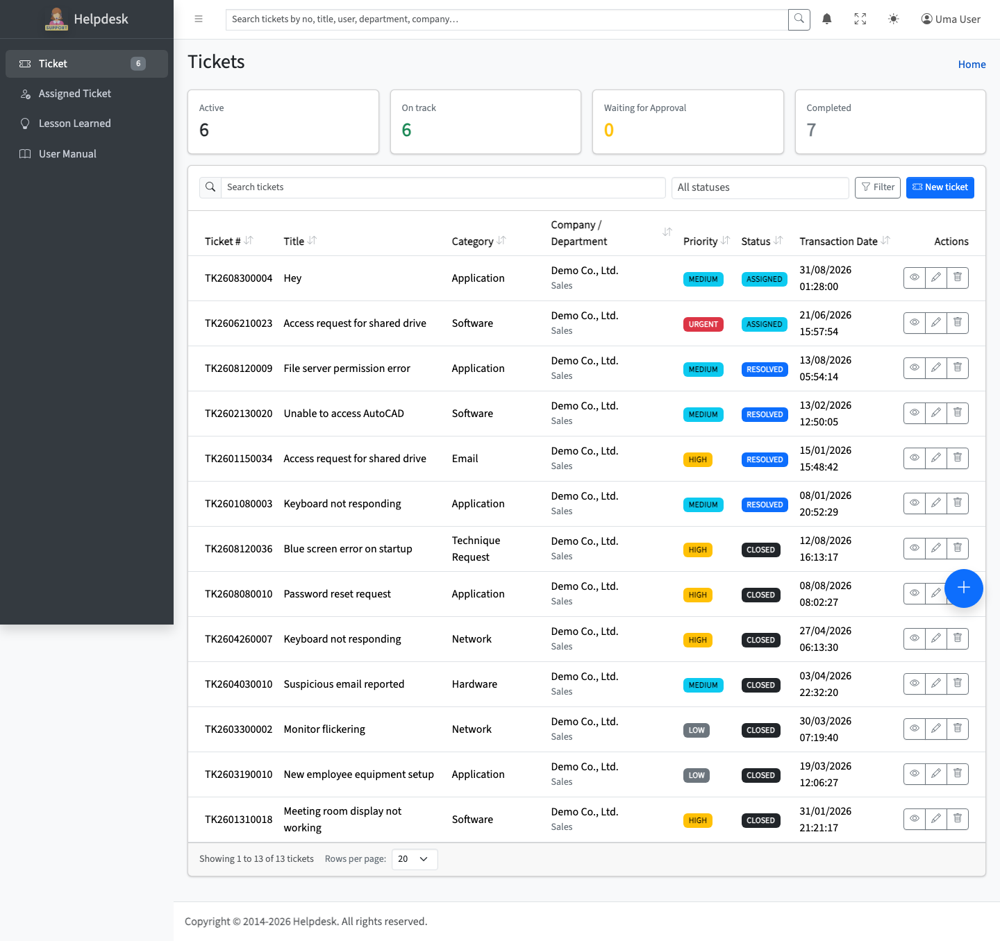
Raising a support ticket
Fill in the New Ticket form; some categories also need an approver's sign-off.
Filling in the form
- From Ticket, choose New Ticket.
- Enter a Title and Description that explain the problem.
- Enter a Telephone number we can reach you on.
- Pick the Category that best matches your issue.
- Choose Submit.
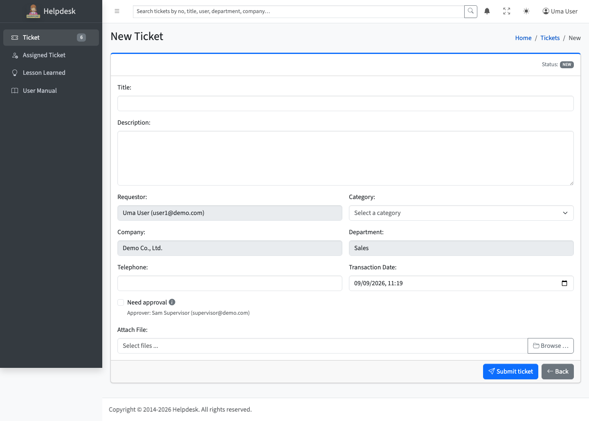
Categories that need approval
Some categories require a department approver to sign off before work begins.
- When you pick such a category, a Message to approver box appears.
- Explain why the request is needed, then Submit.
- The ticket is created and an approval request is sent to your department's approver(s).
- You are notified when it is approved or rejected.
Attachments
Add screenshots or files while creating the ticket, or later from the ticket page. They appear in the ticket's Attachments area.
Tracking your tickets
Search, filter and sort the list of tickets you have raised.
The ticket list
Ticket shows every ticket you have raised, newest first. The badge on the sidebar item counts your tickets that are not yet closed.
- Search by title or ticket number.
- Filter by status.
- Click a column header to sort; change rows per page at the bottom.
Ticket statuses
- NEW — submitted, not yet picked up.
- ASSIGNED — someone is working on it.
- WAITING — waiting for an approver's decision.
- RESOLVED — a fix has been applied; review it and close the ticket.
- REOPENED — you reopened it because the problem returned.
- CLOSED — finished.
Following up: comments, resolution & rating
Add comments, respond when a ticket is resolved, and rate the service.
Comments
Open a ticket to see its full history and comment thread. Add a comment to give more detail or answer a question from the support team. You can attach files to a comment.
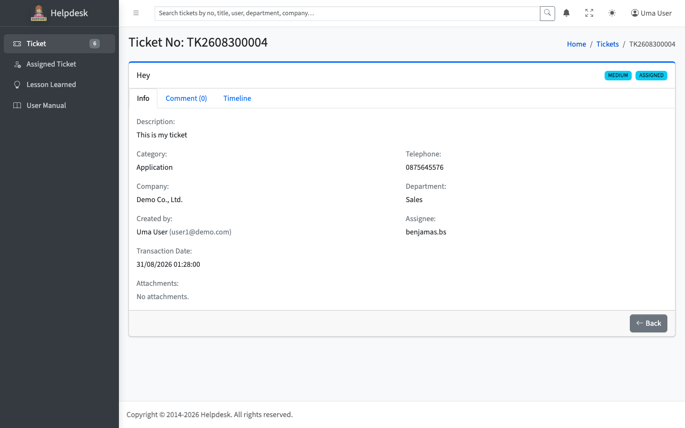
When a ticket is resolved
- You are notified when the ticket is marked RESOLVED.
- Open the ticket and check the fix works for you.
- If it does, choose Close Ticket and give a satisfaction rating.
- If it does not, add a comment explaining what is still wrong to reopen it.
Notifications
The bell in the top bar tells you when something on your tickets changes.
Using the bell
- A number on the bell is the count of things you have not looked at yet.
- Open the bell to see the list; this clears the count.
- Choose an item to jump straight to that ticket or approval.
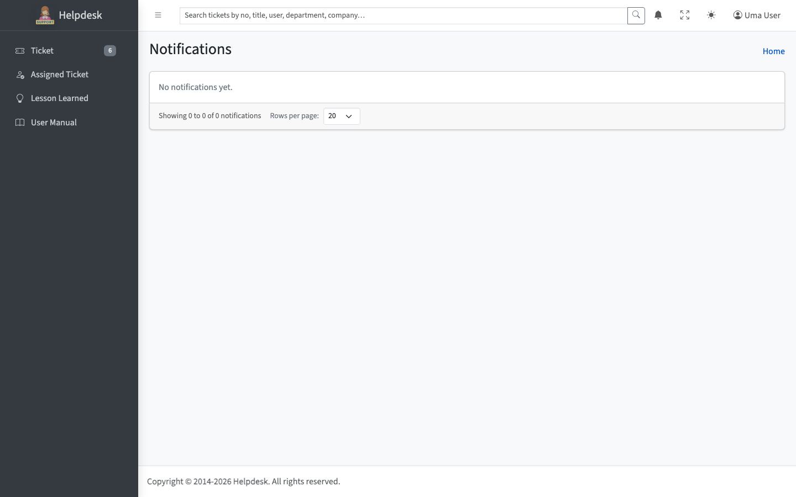
Your profile, password & API tokens
Update your details, change your password, and create tokens for tools.
Profile & password
- Open Profile from the top-right user menu.
- Edit your name or telephone and save.
- To change your password, enter your current password and a new one of at least 8 characters.
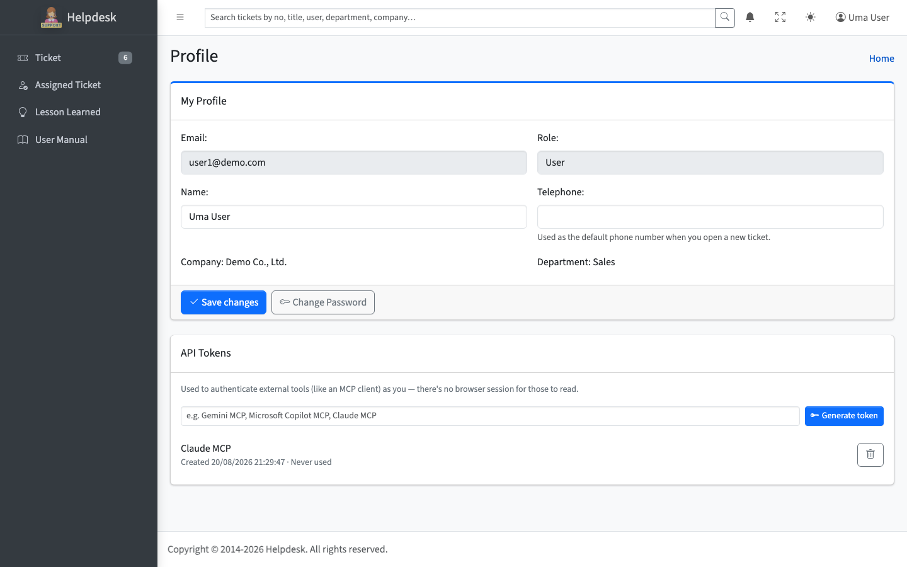
API tokens
A personal access token lets an external tool (for example the MCP integration) act as you.
- In the API Tokens card, choose New token and give it a name.
- Copy the token now — it is shown only once.
- Delete a token any time to revoke it immediately.
Search & Lesson Learned
Find your tickets fast, and check the knowledge base before raising a ticket.
Global search
The search box in the top bar looks across tickets you are allowed to see. Type part of a title or ticket number.
Lesson Learned
Lesson Learned collects fixes for recurring problems. Search it first — your issue may already have a documented solution.
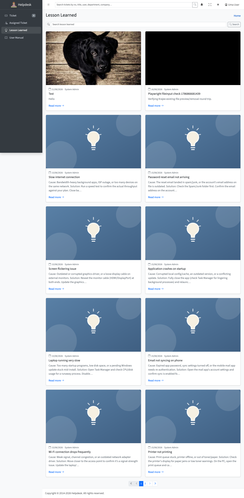
For Approvers
Department approvers who review tickets that need sign-off.
The approval queue
Where requests that need your sign-off wait for a decision.
Finding requests
Approval Ticket in the sidebar lists every pending request for the departments where you are an approver. The badge counts them.

Approving or rejecting
Open a request, read the requester's message, and record your decision.
Making a decision
- Open a request from the approval queue.
- Read the ticket details and the requester's message to the approver.
- Choose Approve or Reject and add a comment explaining your decision.
- Submit. The requester is notified and the ticket moves on (or stops, if rejected).
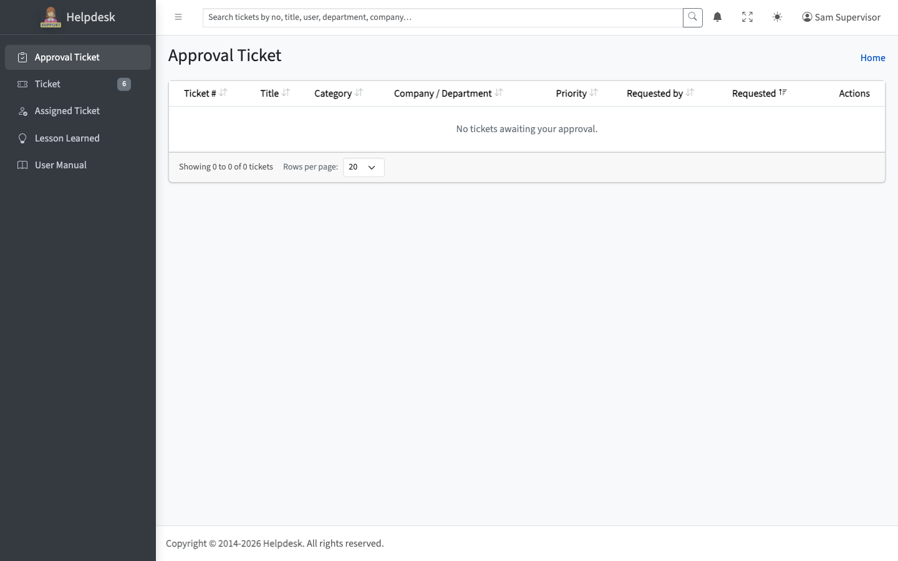
More than one approver
A department can have several approvers. The same request appears for all of them, and whoever acts first decides it.
Tickets assigned to you
Approvers can also be assigned tickets to work on, individually or via a group.
Your assigned queue
Assigned Ticket lists tickets assigned directly to you or to any group you belong to. It is ordered so the tickets that need action now come first.
- ASSIGNED / REOPENED / NEW appear first — these need you.
- RESOLVED is done but waiting for the requester.
- WAITING is blocked on an approval and is not yours to action.
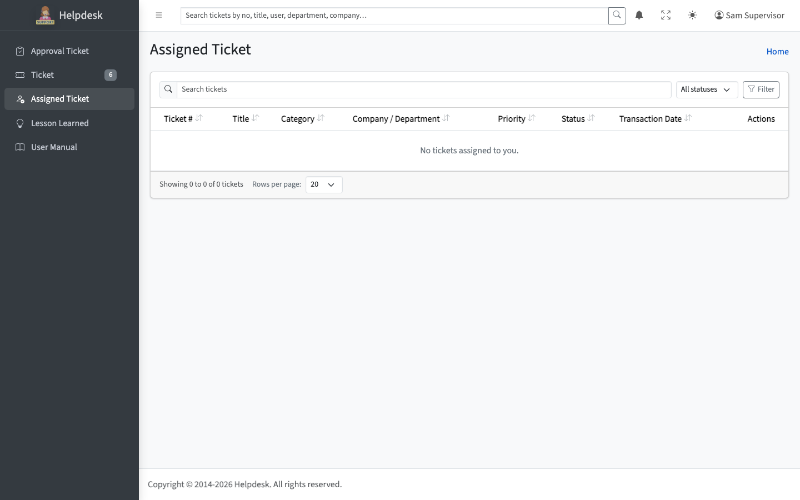
For Administrators
Administrators who triage tickets and manage master data.
Administrator overview & dashboard
What administrators can do, and how to read the dashboard.
What an administrator can do
- Triage and assign every ticket (Ticket Management).
- Run and export reports.
- Manage master data: users, user groups, categories, companies, departments, lesson learned.
- View the activity log.
The dashboard
Dashboard shows tiles for the main status buckets. Choosing a tile opens Ticket Management already filtered to that set.
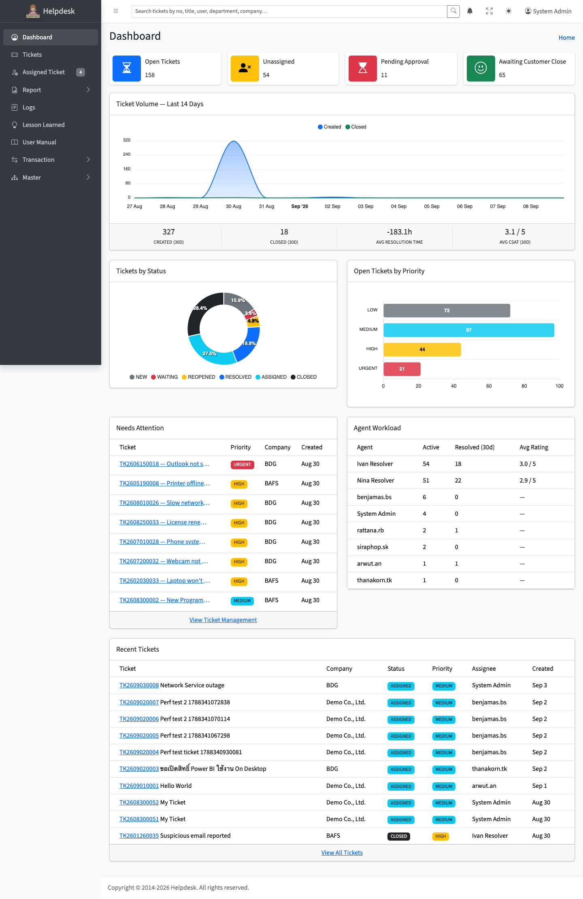
Ticket Management: triage, delete & restore
The admin working view for every ticket in the system.
Working the queue
Transaction ▸ Ticket Management lists all tickets with search, status filter and sorting. Row actions let you open, assign, change status, or delete a ticket.
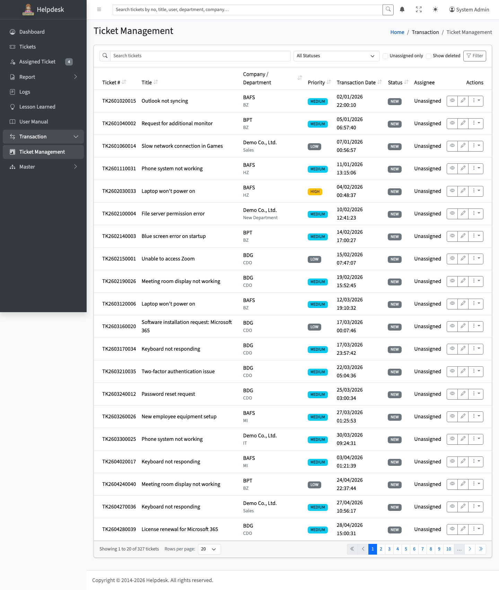
Deleting and restoring
- Choose Delete on a row and enter a reason (required).
- The ticket is hidden from normal lists but not erased.
- Turn on Show deleted to see deleted tickets and Restore them.
Assigning to people and groups
Assign a ticket to individuals, to groups, or both.
The Assign dialog
- Open the Assign dialog from a ticket row or the ticket page.
- Pick one or more individual assignees and/or one or more groups.
- Save. The previous assignment is replaced by your selection.
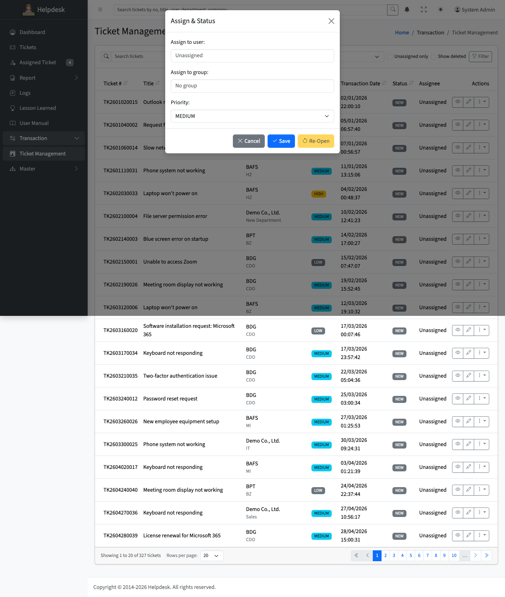
Master — Users
Create users, set roles and status, assign org data, import/export.
Creating and editing
- Master ▸ User ▸ New.
- Enter name, email, role and a password of at least 8 characters.
- Set Company, Department and Telephone so the user can raise tickets.
- Use status INACTIVE or SUSPENDED to block sign-in without deleting the account.
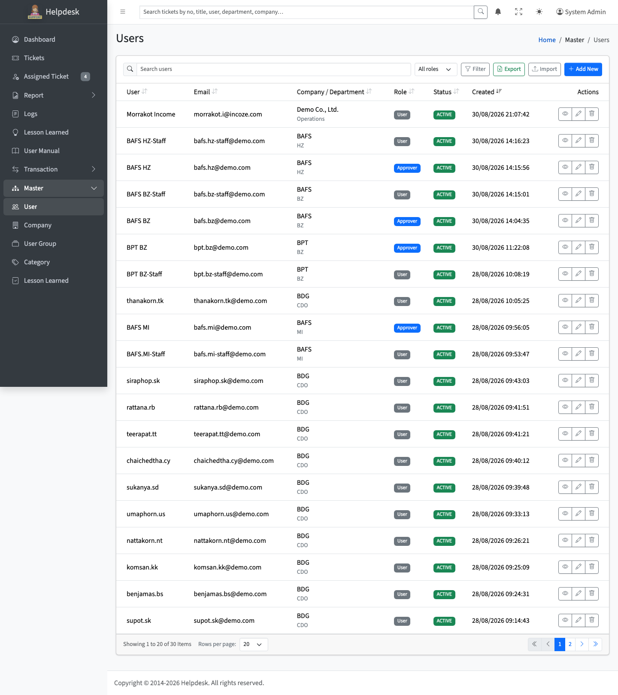
- ADMIN — full access.
- SUPERVISOR — shown as "Approver"; approves requests for their department(s).
- USER — raises and follows tickets.
Import & export
Import creates or updates users from an Excel file. Export downloads the currently filtered list — including company and department — as Excel.
Master — User Groups
Assignment pools. A user can belong to many groups.
Groups and membership
A user group is a pool that tickets can be assigned to. Every member of the group can then see and work those tickets.
- Master ▸ User Group ▸ New. Name the group and stage its members.
- Editing a group replaces its whole member list with what you staged.
- A user can be a member of several groups at once — adding them to one group never removes them from another.
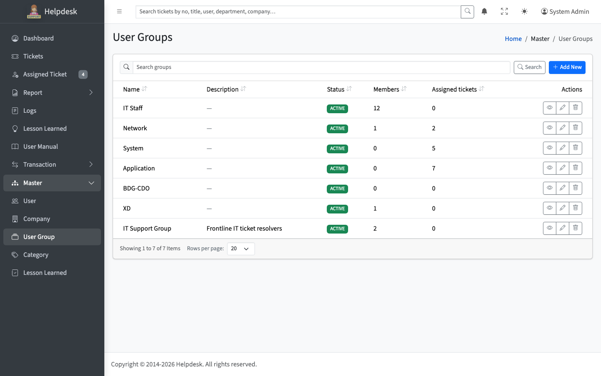
Master — Categories
Ticket categories, their owning admins, responsible groups, and approval.
Setting up a category
- Master ▸ Category ▸ New. Give it a unique name.
- Add Category Admins — the administrators responsible for it.
- Add Responsible Groups — new tickets in this category are auto-assigned to these groups.
- Mark it inactive to hide it from the New Ticket picker without affecting existing tickets.
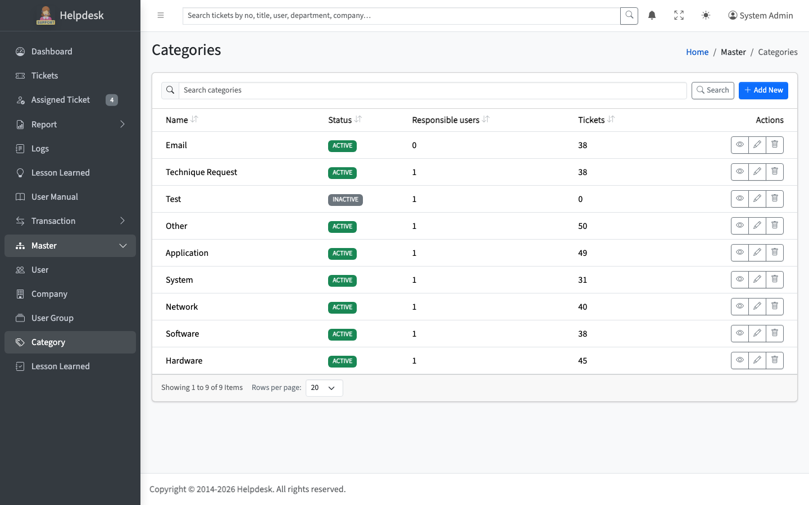
Master — Companies & Departments
The org structure, and each department's approvers.
Companies
Master ▸ Company holds each company's code, name, address and tax id. The list shows how many departments and users each has.
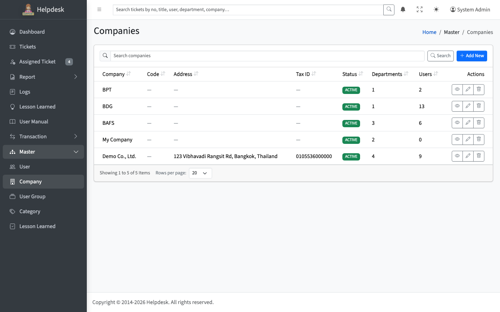
Departments & approvers
Each department belongs to a company and has one or more approvers. Any approver of a department can decide that department's approval requests.
Master — Lesson Learned
Curate the knowledge base of reusable fixes.
Adding entries
- Master ▸ Lesson Learned ▸ New.
- Give it a title and a description; attach images or files.
- Mark it inactive to retire it without deleting.
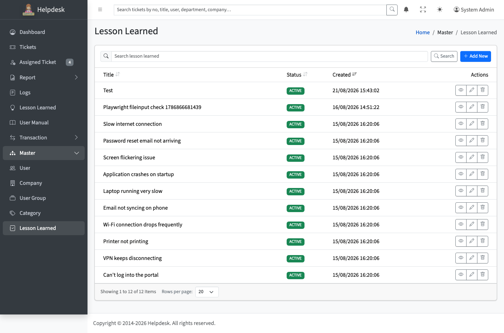
Reports & exports
Main, Assignee, Category and Ticket reports, each exportable to Excel.
Running a report
- Open a report under Report in the sidebar.
- Set the date range and any report-specific filters, then apply.
- Charts and tables refresh; choose Export for the same data as Excel.
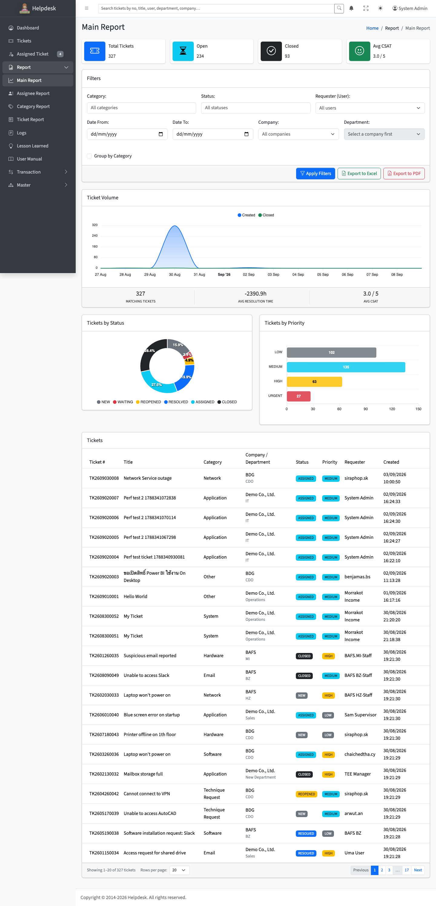
How SLA time is measured
SLA time is the time from when a ticket was first assigned to when it was resolved, in days to one decimal place. Unresolved tickets show a dash.
Activity log
A record of significant actions across the system.
Reading the log
Logs shows an audit trail of actions with the actor, the affected area and a timestamp. Use it to see who changed what and when.
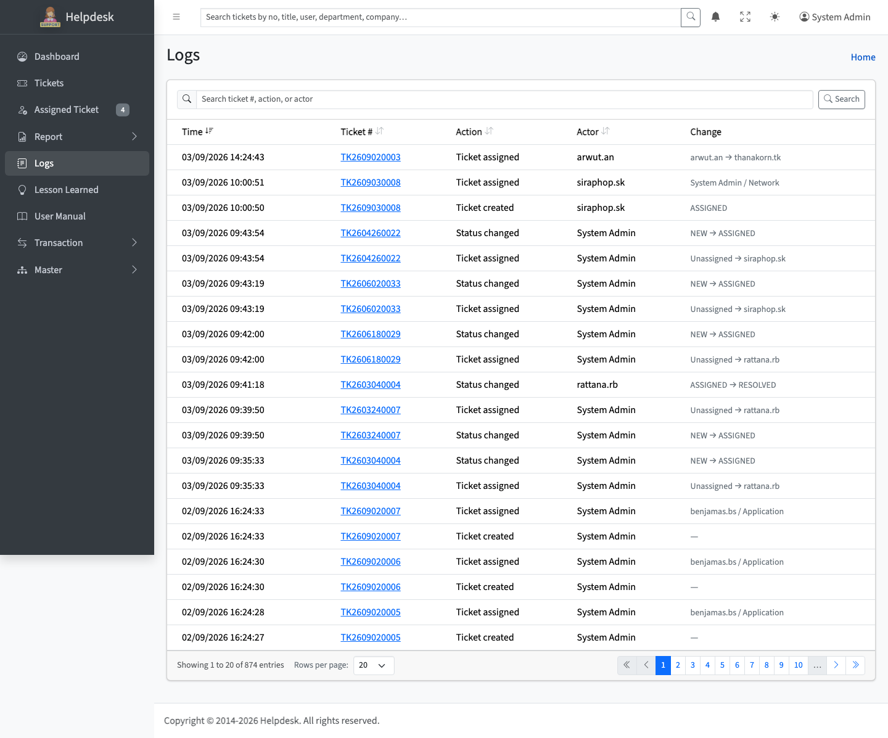
MCP API access
Let external tools work with the helpdesk as a specific user.
How it works
- A user creates a personal access token on their Profile page.
- The tool calls the MCP endpoint with that token as a Bearer token.
- Every action runs as that user, with the same permissions they have in the app.
- Revoke access by deleting the token; a suspended user's token stops working immediately.